SdM Eventi – Guida all'uso
A cosa serve l'app
SdM Eventi serve a organizzare gli eventi sportivi: si costruisce un elenco ad albero di rami e attività, si affidano le attività alle persone, si fissano le scadenze e si segue lo stato di avanzamento fino al consuntivo.
- Ogni persona vede le attività che le competono e le aggiorna dal telefono.
- Chi coordina vede l'avanzamento di tutto l'evento e riceve le notifiche delle scadenze.
- Si installa come un'app sul telefono e funziona anche senza rete per le operazioni principali.
Entrare nell'app (e come registrarsi)
- Scrivi la tua email e tocca Invia codice di accesso.
- Ricevi per mail un codice: scrivilo nell'app. Vale pochi minuti; se scade, richiedilo di nuovo.
- Se l'amministratore ha attivato l'accesso semplificato, per gli utenti che non sono amministratori basta la sola email.
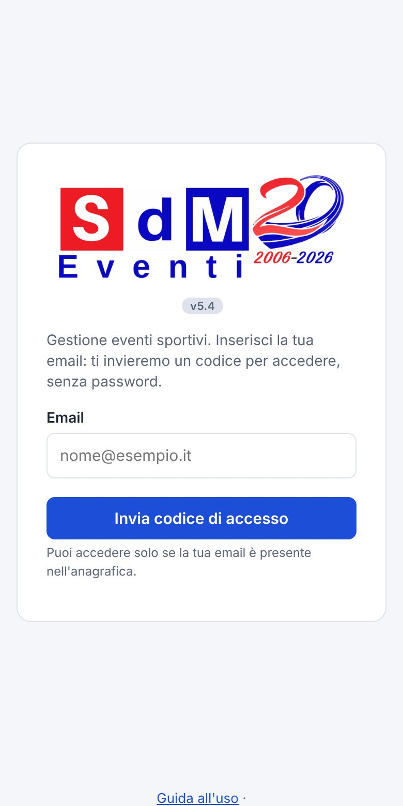
Installare l'app sul telefono
- Android / PC (Chrome, Edge): dal menu del browser scegli «Installa app» o «Aggiungi a schermata Home».
- iPhone / iPad (Safari): tocca il tasto Condividi e scegli Aggiungi a Home. Su iPhone le notifiche funzionano solo con l'app installata.
Problemi di accesso
Non arriva il codice
Controlla la cartella spam e che l'email sia quella inserita in anagrafica. Il codice vale pochi minuti: se è scaduto richiedilo. Se continua a non arrivare, chiedi all'amministratore di verificare la tua scheda (email corretta e persona attiva).
Dice che non ho accesso
La tua email non è tra quelle abilitate. Chiedi all'amministratore di inserirla (o correggerla) in anagrafica.
Vedo una versione vecchia dell'app
Chiudi completamente l'app e riaprila: scarica la nuova versione.
Dopo l'accesso, riaprendo questa guida (dall'icona del logo o da Altro → Guida all'uso) vedrai le istruzioni del tuo ruolo.
Primi passi
Installare l'app sul telefono
- Android / PC (Chrome, Edge): in Altro → Impostazioni tocca Installa app, oppure usa «Installa» / «Aggiungi a schermata Home» dal menu del browser.
- iPhone / iPad (Safari): tocca il tasto Condividi e scegli Aggiungi a Home. Su iPhone le notifiche funzionano solo con l'app installata.
I ruoli
| Ruolo | Cosa può fare |
|---|---|
| Operatore | Vede le attività di cui è incaricato: cambia lo stato, scrive la nota, compila la check-list, consuntiva. |
| Responsabile | In più gestisce uno o più rami (e tutto ciò che sta sotto): avanzamento, persone, attività da confermare. Può creare sottorami solo se l'amministratore lo consente. |
| Amministratore | In più vede e gestisce tutti gli eventi: persone, eventi, struttura, conferma «Finito», registro modifiche, Excel, backup. |
| Proprietario | È un amministratore che in più gestisce i Parametri dell'app. |
Se hai due ruoli nello stesso evento
Se sei sia incaricato di attività sia responsabile (o amministratore), all'ingresso l'app chiede «Come vuoi entrare?»: scegli Operatore per lavorare sulle tue attività, oppure Responsabile / Amministratore per gestire. Con la spunta «Ricorda la scelta» non te lo chiederà più su quel dispositivo. Puoi cambiare in ogni momento da Altro → Entri come….
In modalità Operatore non si può modificare la struttura né confermare «Finito», e questa guida mostra solo le funzioni dell'operatore.
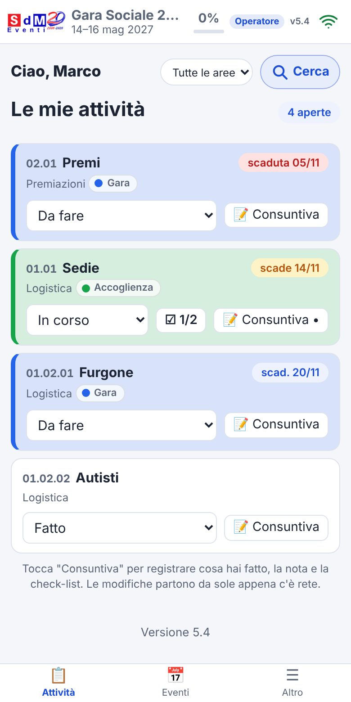
Se oltre alle attività ti viene affidato anche un ramo, all'ingresso potrai scegliere se lavorare come Operatore o come Responsabile.
Muoversi nell'app
- Barra in basso (smartphone): Attività, Eventi e Altro. Home, Persone, Eventi, Struttura (solo amministratore) e Altro. Su PC le stesse voci stanno nel menu laterale o in alto.
- Evento in uso: il nome è in alto a sinistra. Per cambiarlo vai in Eventi e tocca quello che ti serve.
- Logo SdM Eventi: toccandolo, in qualsiasi videata, si apre questa guida (si torna all'app con la freccia ‹ in alto).
- Freccia indietro ‹ in alto: compare nelle sottopagine (Registro modifiche, Da rivedere, Impostazioni, Parametri, scheda attività). Il tasto indietro del telefono chiude prima la scheda o il dialogo aperto, poi torna alla pagina precedente.
- Indicatore di rete (icona in alto a destra): se sei offline puoi comunque consultare i dati e cambiare stato, nota e check-list. Le modifiche partono da sole al ritorno della rete (se la stessa informazione è stata cambiata da qualcun altro vince la modifica più recente). Le altre modifiche richiedono la connessione.
- Da rivedere (in Altro): elenca le modifiche fatte offline che il server non ha potuto applicare.
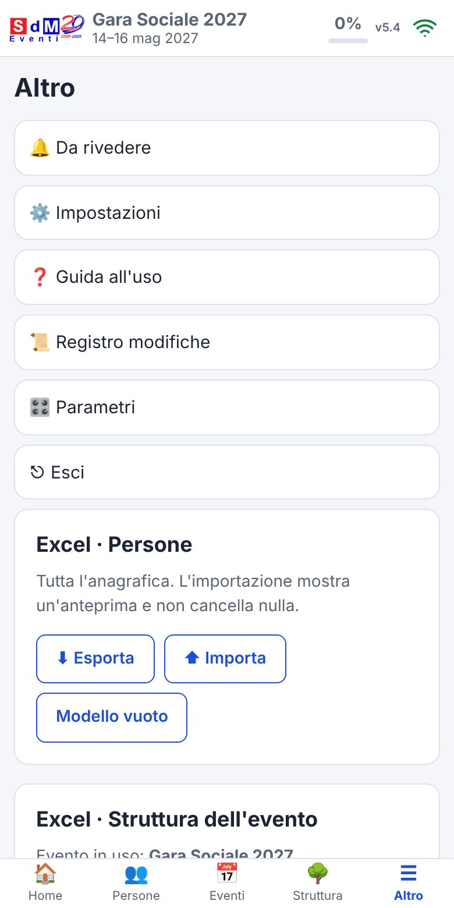
Operatore: attività e consuntivo
Le mie attività
La Home elenca le attività di cui sei incaricato, con numero, ramo, area (pallino colorato), scadenza e stato. Le scadute sono in rosso, quelle in preavviso in giallo.
- Cambiare lo stato: dal menu sulla riga scegli Da fare / In corso / Fatto. Lo stato «Finito» lo conferma solo l'amministratore.
- Data e ora di chiusura: quando scegli «Fatto» l'app propone adesso; puoi cambiarla (non può essere nel futuro) e confermare.
- Consuntiva: apre la scheda dell'attività (vedi sotto). Un puntino sul pulsante indica che c'è già una tua nota.
- Mostra le attività finite: le attività chiuse restano nascoste finché non le richiami.
La scheda dell'attività (consuntivo)
- Tocca 📝 Consuntiva sull'attività.
- Scegli lo stato con i tre pulsanti in alto.
- Scrivi «La mia nota»: cosa hai fatto, cosa manca.
- Se l'attività ha una check-list, spunta le voci completate e scrivi la quantità rilevata accanto a quella prevista.
- Tocca Salva (in alto o in fondo alla scheda). Chiudi esce senza salvare.
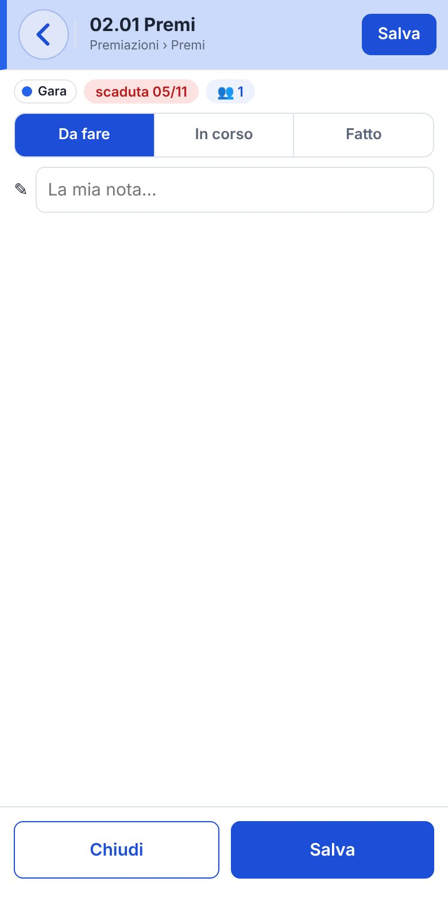
Le note di ciascun incaricato sono separate: tu modifichi solo la tua.
Responsabile: Home e Struttura
Come responsabile, oltre alle funzioni dell'operatore (sezione precedente), gestisci i rami che ti sono affidati e tutto ciò che sta sotto.
Come amministratore hai anche tutte le funzioni dell'operatore e del responsabile, estese a tutti i rami e gli eventi.
La Home
- Totalizzatore: cinque celle-filtro Tutte, Da fare, In corso, Fatte, In scadenza. Toccane una per vedere solo quelle attività; Tutte toglie il filtro.
- Avanzamento: percentuale e barra (finite, da confermare, in corso, da fare).
- Da confermare: le attività messe «Fatto» dagli operatori. Tu, come amministratore, tocchi ✔ Finito per confermarle. Le conferma l'amministratore: tu le vedi «in attesa di conferma».
- Per persona / Per ramo: righe chiuse; toccane una per aprirla, oppure Apri tutti / Chiudi tutti. Un puntino verde accanto al nome indica chi si è già collegato alla app, lampeggiante se è online in quel momento.
- Tutte le aree: filtra per area dell'evento.
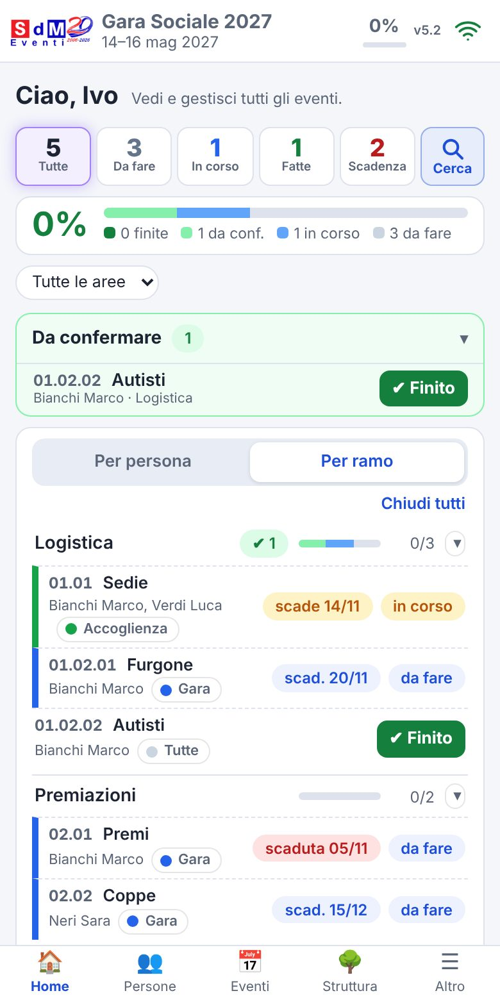
La Struttura (albero di rami e attività)
Su smartphone la pagina Struttura è riservata all'amministratore; da PC la trovi nel menu.
È la pagina dove si costruisce l'evento. Ogni riga ha i suoi pulsanti:
- ✎ modifica la riga (titolo, descrizione, note, responsabile del ramo).
- ⋯ apre il menu: ＋ Aggiungi sotto, ⧉ Duplica, 🗑 Elimina. Su PC questi pulsanti sono già visibili sulla riga.
- + Ramo di primo livello in alto crea un nuovo ramo principale.
- Spostare: tieni premuta la maniglia ⋮⋮ a sinistra (circa un decimo di secondo) e trascina nel punto desiderato. La destinazione si evidenzia; in rosso se non è permessa. ↶ Annulla spostamento riporta indietro gli ultimi 3 spostamenti.
- Duplica: chiede titolo e descrizione della copia; con la spunta «Duplica anche tutti i sottorami» copia l'intera catena.
- Espandi / Comprimi aprono o chiudono tutto l'albero.
I numeri (01, 01.01, 01.02.01…) sono automatici e seguono l'ordine dell'albero. L'ultimo livello di ogni ramo è una attività (con scadenza, stato, incaricati); gli altri sono rami (contenitori). Il responsabile di un ramo vale anche per i sottorami che non ne hanno uno proprio (👤 impostato, ↳ ereditato).
Come responsabile puoi creare sottorami solo se l'amministratore lo ha consentito nei Parametri.
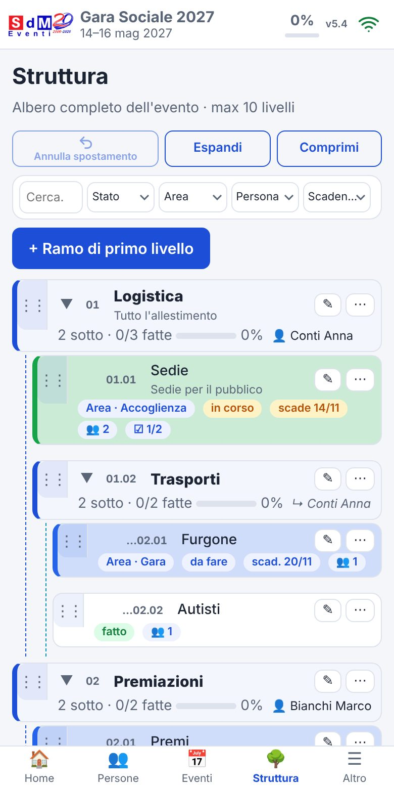
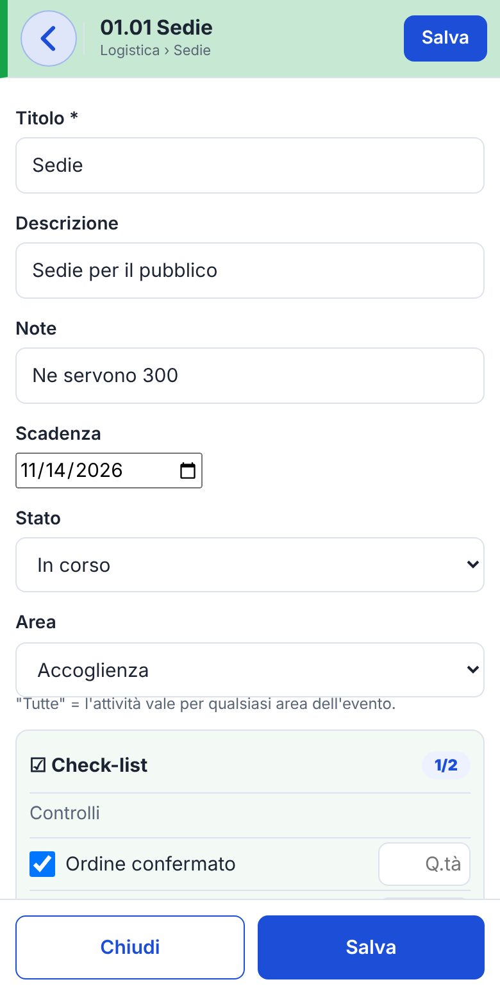
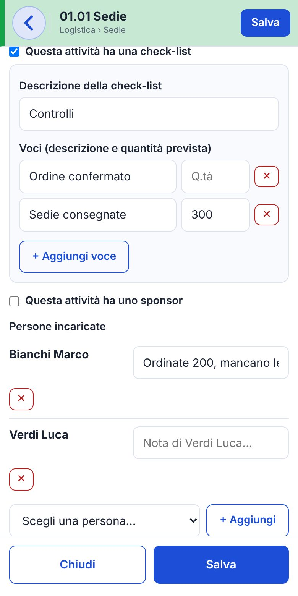
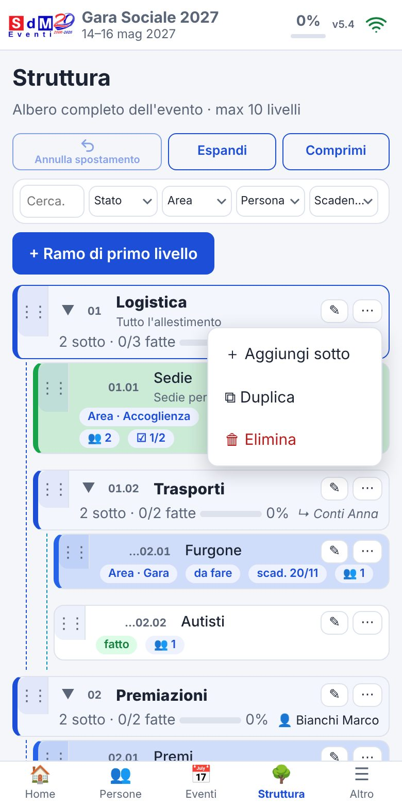
Compilare una attività
Tocca ✎ su un'attività per aprire la scheda completa:
- Titolo, descrizione, note, scadenza (senza scadenza l'attività non risulta mai «scaduta» e non genera notifiche).
- Stato e Area (le aree si definiscono nell'evento; «Tutte» vale per ogni area).
- Check-list: spunta «Questa attività ha una check-list», dai una descrizione e aggiungi le voci con la quantità prevista (+ Aggiungi voce).
- Sponsor (fornitore, referente, cellulare, importo): solo amministratori.
- Persone incaricate: scegli la persona e tocca + Aggiungi; ognuna ha la sua nota. La ✕ rossa toglie l'incarico.
Notifiche delle scadenze
Ogni mattina alle 08:00 amministratori e responsabili ricevono una notifica per le attività in scadenza (o scadute e non ancora «fatte»): 🔴 scaduta, 🟠 oggi o domani, 🟡 più avanti. Toccandola si apre la scheda dell'attività in sola lettura; ✏ Modifica la apre per intero. Per attivarle: Altro → Impostazioni → Notifiche delle scadenze → Attiva (da fare su ogni dispositivo).
Amministratore: caricare i dati
Persone
A mano: in Persone tocca + Nuova persona, compila Cognome, Nome, Email (obbligatori; l'email serve per l'accesso). Facoltativi: cellulare, data di nascita, ruolo (Operatore o Amministratore), iscritto (se sì il Numero iscritto è obbligatorio e univoco), note. Attivo lascia accedere la persona: se lo togli non può entrare e non compare negli elenchi. Poi Salva.
Invita all'app: aprendo una persona già salvata trovi 💬 WhatsApp (solo telefono e tablet, serve il cellulare) e ✉️ Mail (serve l'email): si apre il messaggio di invito già scritto con il link all'app, da inviare.
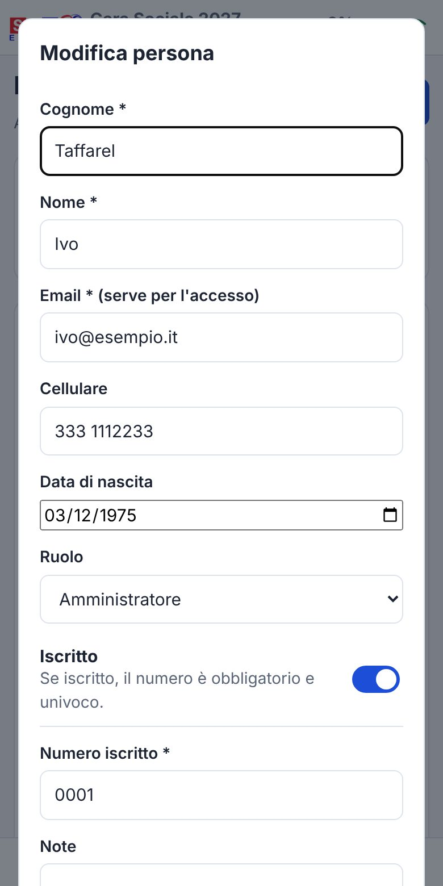
Da Excel: persone
- Vai in Altro, card Excel · Persone.
- Tocca Modello vuoto: si scarica
modello_persone.xlsxcon una riga di esempio (cancellala) e un foglio «Istruzioni». - Compila una riga per persona. Colonne: Cognome, Nome, Email (obbligatorie), Cellulare, Iscritto (Sì/No), Numero iscritto, Data di nascita (gg/mm/aaaa), Ruolo (Operatore o Amministratore), Attivo (Sì/No), Note.
- Tocca ⬆ Importa e scegli il file (
.xlsxo.csv). Serve la connessione. - L'app mostra un'anteprima con quante persone sono nuove, quante da aggiornare e quante righe hanno errori. Con la spunta «Aggiorna le persone già presenti con la stessa email» chi ha la stessa email viene aggiornato invece di essere duplicato.
- Se tutto è corretto tocca Importa (N). Le righe con errori vengono saltate: correggile nel file e ricarica.
L'importazione non cancella nulla. Con ⬇ Esporta scarichi l'anagrafica attuale: puoi correggerla in Excel e reimportarla.
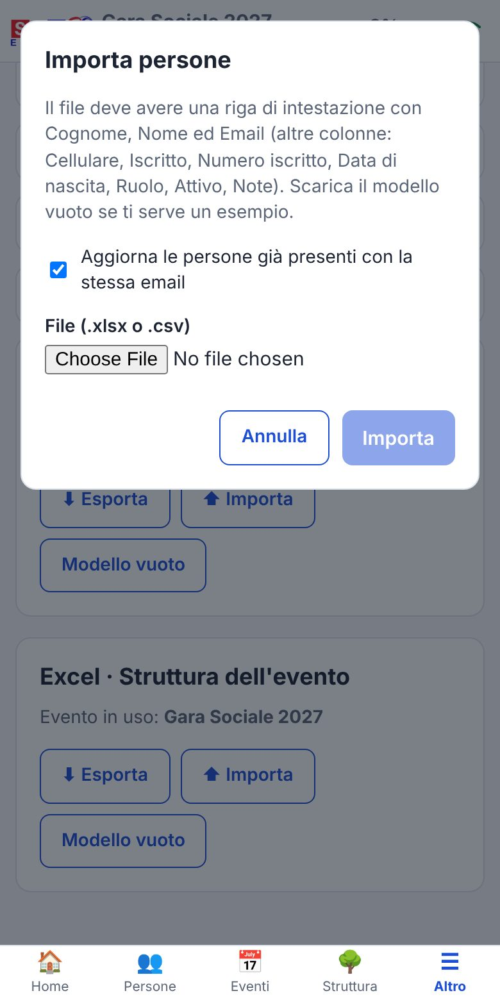
Evento
In Eventi tocca + Nuovo evento: titolo e data di inizio sono obbligatori, la data fine serve solo se dura più giorni. Le aree (facoltative, max 10) sono sotto-aree dell'evento (es. Gara, Accoglienza), ognuna con il suo colore: poi ogni attività potrà essere assegnata a una sola area, oppure a «Tutte».
Sulla riga di un evento trovi Modifica e Duplica. Duplicare un evento è comodo per l'edizione successiva: copia rami, descrizioni e note, sposta le scadenze della stessa distanza tra le due date di inizio, e permette di copiare o no responsabili e incaricati. Gli stati ripartono da «da fare».
Toccando un evento lo scegli come evento in uso.
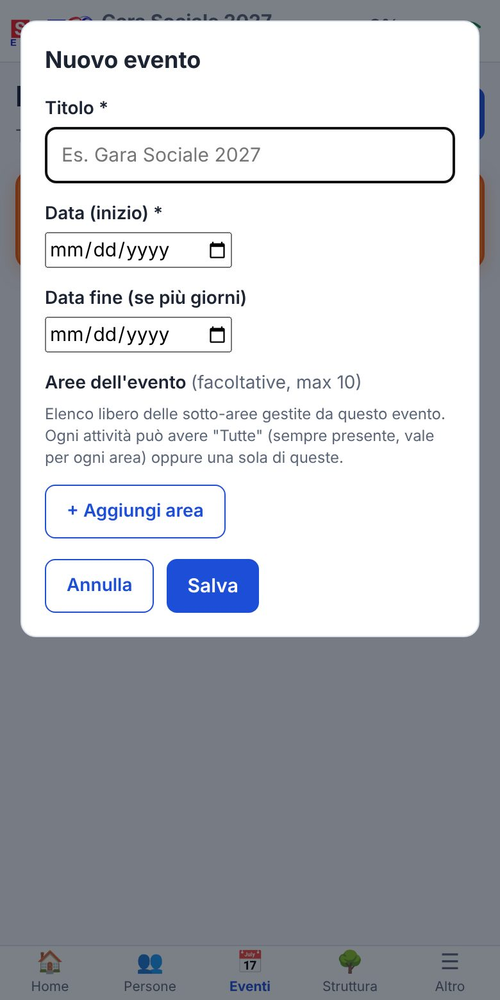
Struttura a mano
Vai in Struttura, crea il ramo con + Ramo di primo livello e aggiungi i livelli sotto con ⋯ → ＋ Aggiungi sotto (vedi «La Struttura» nella sezione di gestione). Poi apri le attività con ✎ per scadenza, incaricati e check-list.
Da Excel: struttura dell'evento
Comodo per caricare molte attività in una volta. L'importazione aggiunge rami e attività all'evento in uso (controlla il nome sotto «Excel · Struttura dell'evento»); non cancella e non sposta nulla.
- Altro → Excel · Struttura dell'evento → Modello vuoto.
- Compila una riga per ogni ramo o attività. Le colonne Livello 1 … Livello 10 descrivono il percorso: nell'ultima cella riempita c'è il nome dell'elemento (es. Logistica | Trasporti | Furgone è l'attività «Furgone» nel ramo «Trasporti» di «Logistica»).
- Le righe dei soli rami sono facoltative: se mancano, i rami si creano dal percorso delle attività.
- Altre colonne: Descrizione, Note, Responsabile (email, solo per i rami), Scadenza (gg/mm/aaaa), Stato (Da fare, In corso, Fatto, Finito: solo per elementi nuovi), Incaricati (email separate da
;, solo per le attività). - ⬆ Importa, scegli il file, controlla l'anteprima e conferma.
Elementi già esistenti con lo stesso percorso vengono riconosciuti: si aggiornano solo i campi compilati. Con ⬇ Esporta ottieni il file della struttura attuale (le colonne N. e Area sono solo informative).
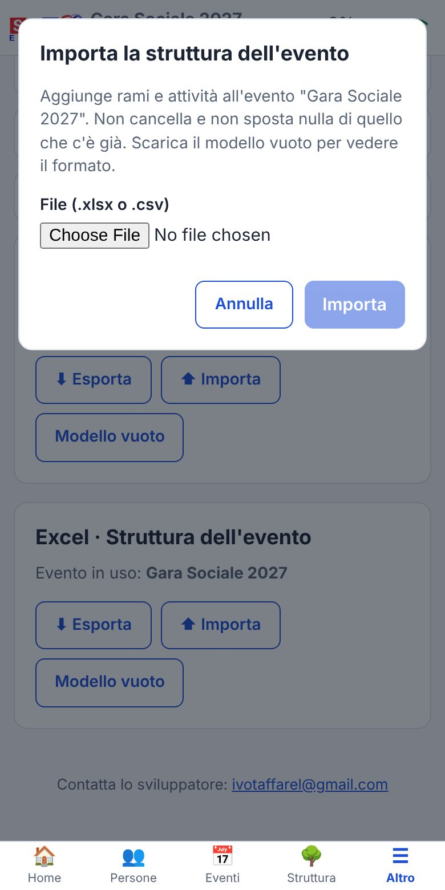
Backup
In Altro → Impostazioni → Backup, ⬇ Scarica crea un file ZIP con tutti i dati (un file per tabella). Serve la connessione. Contiene dati personali: conservalo in un posto protetto. Per ora non esiste il ripristino da file.
Cercare i dati
Cerca nelle attività (Home, smartphone)
- Nella Home tocca 🔍 Cerca (in alto, accanto ai filtri di stato).
- Scrivi nel campo: la lista si filtra mentre scrivi. Si cerca in numero, titolo, descrizione, note, area, stato, scadenza (gg/mm/aaaa), percorso, incaricati, responsabile, note degli incaricati e check-list.
- Più parole: devono esserci tutte, in qualsiasi ordine; maiuscole e accenti non contano (es. sedie marco).
- Totali, percentuale ed elenchi seguono la ricerca. La ✕ a destra cancella e chiude il campo.
Vedi le attività che ti competono: le tue se sei Operatore, quelle dei tuoi rami se sei Responsabile, tutte se sei Amministratore. La ricerca si azzera cambiando evento o uscendo.
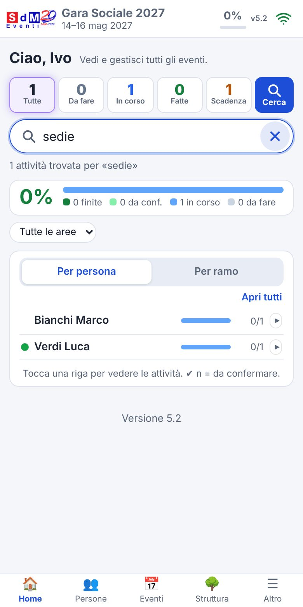
Altri modi per trovare le cose
| Dove | Come |
|---|---|
| Home | Le celle Da fare, In corso, Fatte, In scadenza mostrano solo quel gruppo; il menu «Tutte le aree» filtra per area; «Per persona / Per ramo» raggruppa. |
| Struttura | Barra filtri: testo (Cerca…), Stato, Area, Persona, Scadenza (scadute, in scadenza, con/senza scadenza). ✕ Azzera toglie i filtri; il contatore mostra quante righe corrispondono. |
| Persone | Il campo Cerca per cognome, nome, email, telefono… e il filtro (Tutte, Solo iscritti, Non iscritti, Amministratori, Responsabili di rami); la spunta «anche non attivi» include chi è disattivato. Dalla lista puoi chiamare, scrivere su WhatsApp o inviare una mail con un tocco. |
| Registro modifiche | Altro → Registro modifiche: chi ha cambiato cosa e quando. Filtri per testo, evento, azione, tipo, periodo; tocca una riga per il dettaglio «vecchio → nuovo»; Carica altri per i meno recenti; esportabile in Excel. |
| Eventi | Elenco degli eventi con le date; quelli passati hanno l'etichetta «concluso». |
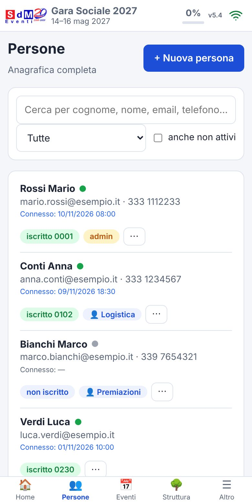
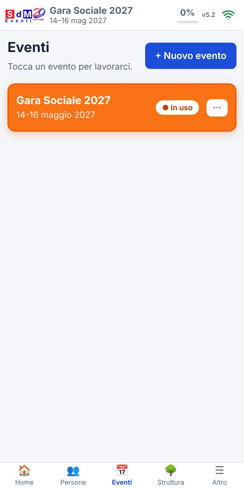
Esportare i dati in Excel
- Persone e Struttura: Altro → Excel → ⬇ Esporta.
- I miei dati: Impostazioni → Scarica i miei dati (Excel).
- Registro modifiche: pulsante di esportazione nella pagina del registro.
Altre funzioni
- Impostazioni (Altro → Impostazioni): i tuoi dati, versione, ultima sincronizzazione, modifiche in attesa di invio, Sincronizza, tema, installazione, informativa privacy, scarica i tuoi dati, notifiche, backup, Esci.
- Parametri (solo proprietario): nome e logo dell'app, livelli massimi dell'albero, permessi dei responsabili, accesso con sola email, notifiche delle scadenze e giorni di anticipo, conservazione del registro, informativa privacy.
- Privacy (GDPR): nella scheda di una persona l'amministratore può scaricare i dati della persona o eliminarla definitivamente (non si può annullare).
Problemi frequenti
Non vedo nessuna attività o nessun evento
Probabilmente non sei ancora stato incaricato di attività: l'evento compare quando ti viene assegnata almeno un'attività. Verifica di avere scelto l'evento giusto in Eventi. Se hai due ruoli controlla anche la modalità in Altro → Entri come….
Sono senza rete: cosa posso fare?
Puoi consultare l'ultima copia dei dati e cambiare stato, tua nota e check-list: partiranno da sole alla riconnessione. Il pulsante Sincronizza in Impostazioni forza l'invio. Se qualcosa non viene accettato lo trovi in Da rivedere.
L'importazione Excel mostra errori
Controlla che ci siano le colonne obbligatorie (Cognome, Nome, Email per le persone) e che le date siano nel formato gg/mm/aaaa. Per la struttura verifica che le email di responsabili e incaricati esistano in anagrafica. Le righe con errori sono segnalate in anteprima e vengono saltate: correggile e ricarica il file. Se compare un errore generale non viene importato nulla.
Non riesco a trascinare una riga nella Struttura
Si trascina solo dalla maniglia ⋮⋮ a sinistra, tenendola premuta un istante. Se la destinazione è rossa lo spostamento non è permesso (ad esempio supera il numero massimo di livelli).
L'app non si aggiorna / vedo una versione vecchia
Chiudi completamente l'app e riaprila: scarica la nuova versione. Il numero di versione è in alto accanto all'icona della rete e in Impostazioni.
Ho sbagliato a eliminare o spostare qualcosa
Gli ultimi 3 spostamenti si annullano con ↶ Annulla spostamento. Per il resto puoi ricostruire cosa è successo dal Registro modifiche. Per il resto chiedi all'amministratore.